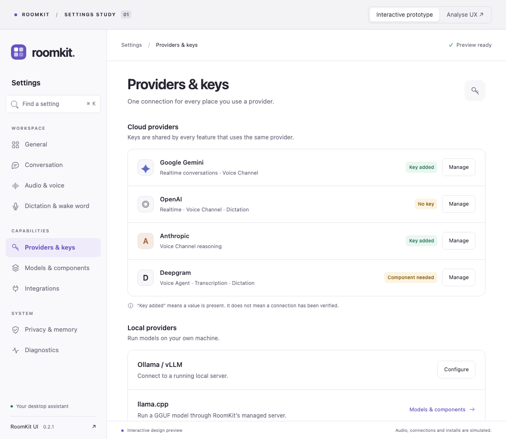

Providers et Integrations,
comparés à l’artefact.
Le premier bilan surestimait la fidélité de ces pages. La correction porte ici sur leur composition : cartes regroupées, hiérarchie, actions par ligne et états vides. Les vues ci-dessous montrent la maquette et l’application à la même taille de fenêtre.



Providers & keys
- Une carte « Cloud providers » contenant des lignes avec symbole, usages, statut et bouton Manage.
- Une section distincte « Local providers » pour Ollama / vLLM et llama.cpp.
- Les champs de clés apparaissent seulement à la demande ; ils sont remasqués en quittant leur éditeur.
- « Key added » et « Component needed » reflètent des états différents. Aucun statut ne prétend valider la connexion.
Integrations
- Ordre de la maquette : MCP servers, CLI tools, Skills. MCP s’ouvre en premier.
- Grande carte vide centrée, avec icône, explication et action principale.
- Entrées regroupées dans une carte, avec Manage et suppression sur chaque ligne ; la sélection préalable a disparu.
- Skills retrouve une vue principale simple. Le bouton « Browse skills.sh » reste visible en tête de page ; les sources gardent leur accès dédié.
Vues complémentaires


Différences conservées et vérification
La maquette ne montrait que quatre fournisseurs cloud. L’application conserve les dix fournisseurs cloud pris en charge, ainsi que les options locales : la carte est donc plus longue. Elle garde aussi une recherche utile pour cette liste complète. Manage ouvre l’éditeur dans la ligne plutôt qu’un dialogue de démonstration. Les écrans avancés MCP/OAuth, CLI et sources restent fonctionnels.
Les captures utilisent des données de démonstration et des réglages isolés. Les tests protègent la recherche, les changements de thème, la persistance des clés, les actions au clavier et la stabilité des entrées après filtrage ou suppression.
Dernière suite complète : 1 144 tests réussis, 1 ignoré. Correction de l’accès skills.sh : 50 tests ciblés réussis, dont le parcours recherche, installation et activation avec réseau simulé. Ruff, Mypy et Bandit passent. Les captures ont été contrôlées en clair et sombre, y compris à la largeur minimale, sans débordement horizontal.